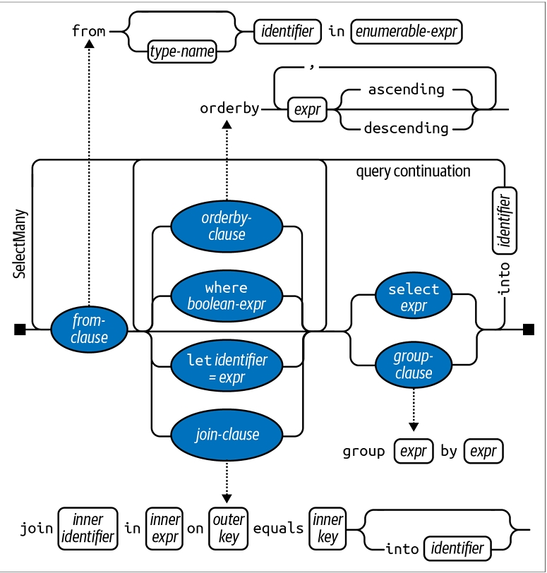
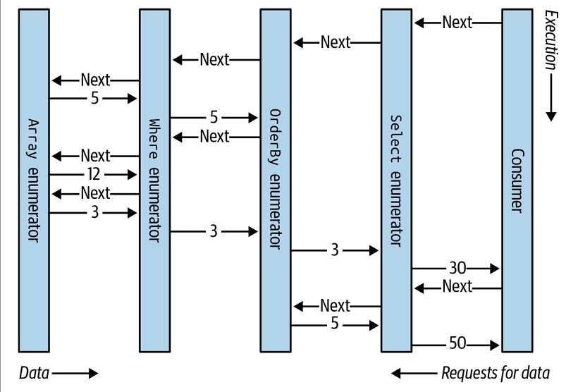
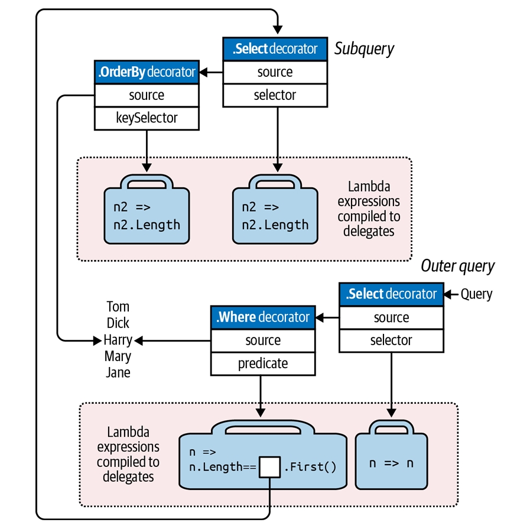
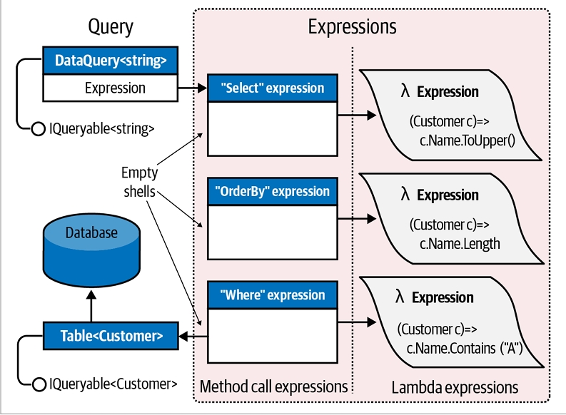

فصل هشتم: پرسوجوهای LINQ
LINQ یا Language Integrated Query مجموعهای از ویژگیهای زبان و زمان اجراست که برای نوشتن پرسوجوهای ساختاریافته و نوع-ایمن (type-safe) روی مجموعههای محلی از اشیا و منابع داده راه دور استفاده میشود.
LINQ به شما امکان میدهد روی هر مجموعهای که IEnumerable
این فصل معماری LINQ و اصول نوشتن پرسوجوها را توضیح میدهد. همهی نوعهای اصلی در System.Linq و System.Linq.Expressions تعریف شدهاند.
مثالهای این فصل و دو فصل بعدی در یک ابزار تعاملی پرسوجو به نام LINQPad بارگذاری شدهاند. میتوانید LINQPad را از این لینک دانلود کنید.
شروع کار 🚀
واحدهای پایه داده در LINQ، دنبالهها (sequences) و عناصر (elements) هستند. یک دنباله هر شیئی است که IEnumerable
مثال زیر را در نظر بگیرید:
string[] names = { "Tom", "Dick", "Harry" };
در این مثال، names یک دنباله است و "Tom", "Dick", و "Harry" عناصر آن هستند.
به این دنباله محلی (local sequence) گفته میشود چون مجموعهای از اشیا در حافظه محلی را نمایش میدهد.
عملگرهای پرسوجو 🛠️
یک عملگر پرسوجو (query operator) متدی است که یک دنباله را تغییر میدهد. یک عملگر معمولی، یک دنباله ورودی میگیرد و یک دنباله خروجی تغییر یافته تولید میکند. در کلاس Enumerable در System.Linq حدود ۴۰ عملگر پرسوجوی استاندارد پیادهسازی شدهاند که همگی بهصورت متدهای توسعهای (extension methods) هستند.
پرسوجوهایی که روی دنبالههای محلی کار میکنند، پرسوجوهای محلی یا LINQ-to-objects نامیده میشوند.
LINQ همچنین دنبالههایی را پشتیبانی میکند که میتوانند بهطور پویا از یک منبع داده راه دور مانند SQL Server تغذیه شوند. این دنبالهها علاوه بر IEnumerable
نوشتن یک پرسوجوی ساده ✨
یک پرسوجو یک عبارت (expression) است که وقتی شمارش میشود، دنبالهها را با عملگرهای پرسوجو تغییر میدهد. سادهترین پرسوجو شامل یک دنباله ورودی و یک عملگر است.
مثال زیر از عملگر Where برای استخراج رشتههایی که طول آنها حداقل چهار کاراکتر است، استفاده میکند:
string[] names = { "Tom", "Dick", "Harry" };
IEnumerable<string> filteredNames = System.Linq.Enumerable.Where(names, n => n.Length >= 4);
foreach (string n in filteredNames)
Console.WriteLine(n);
خروجی:
Dick
Harry
از آنجا که عملگرهای استاندارد پرسوجو بهصورت extension methods پیادهسازی شدهاند، میتوانیم Where را مستقیماً روی names فراخوانی کنیم، انگار که یک متد نمونه است:
IEnumerable<string> filteredNames = names.Where(n => n.Length >= 4);
برای اینکه این کد کامپایل شود، باید فضای نام System.Linq را وارد کنید. مثال کامل:
using System;
using System.Collections.Generic;
using System.Linq;
string[] names = { "Tom", "Dick", "Harry" };
IEnumerable<string> filteredNames = names.Where(n => n.Length >= 4);
foreach (string name in filteredNames)
Console.WriteLine(name);
خروجی:
Dick
Harry
میتوانیم کد را با نوعدهی ضمنی (implicit typing) کوتاهتر کنیم:
var filteredNames = names.Where(n => n.Length >= 4);
اما این کار میتواند خوانایی کد را در خارج از محیط IDE کاهش دهد، زیرا ابزارهای راهنما وجود ندارند. به همین دلیل در این فصل کمتر از نوعدهی ضمنی استفاده میکنیم.
استفاده از عبارات لامبدا 🔹
اکثر عملگرهای پرسوجو یک عبارت لامبدا (lambda expression) بهعنوان آرگومان میپذیرند. این عبارت لامبدا به هدایت و شکلدهی پرسوجو کمک میکند.
در مثال ما، عبارت لامبدا به شکل زیر است:
n => n.Length >= 4
آرگومان ورودی n نشاندهنده هر عنصر در دنباله است و نوع آن string است. عملگر Where نیاز دارد که عبارت لامبدا یک مقدار bool بازگرداند؛ اگر true باشد، عنصر در دنباله خروجی قرار میگیرد.
امضای آن:
public static IEnumerable<TSource> Where<TSource>(
this IEnumerable<TSource> source,
Func<TSource,bool> predicate
)
مثال بعدی، استخراج تمام نامهایی که شامل حرف "a" هستند:
IEnumerable<string> filteredNames = names.Where(n => n.Contains("a"));
foreach (string name in filteredNames)
Console.WriteLine(name); // Harry
ترکیب پرسوجوها و Fluent Syntax 🌊
تاکنون پرسوجوها را با متدهای توسعهای و عبارات لامبدا ساختهایم. این روش بسیار قابل ترکیب است و امکان زنجیرهای کردن عملگرهای پرسوجو را فراهم میکند. در این کتاب به این روش Fluent Syntax گفته میشود.
C# همچنین یک نحو دیگر برای نوشتن پرسوجوها دارد به نام Query Expression Syntax. پرسوجوی قبلی به شکل یک Query Expression:
IEnumerable<string> filteredNames = from n in names
where n.Contains("a")
select n;
Fluent Syntax و Query Syntax مکمل یکدیگر هستند. در دو بخش بعدی، هر کدام را با جزئیات بیشتری بررسی خواهیم کرد.
نحو Fluent 🔗
Fluent Syntax منعطفترین و بنیادیترین نحو نوشتن پرسوجوهاست. در این بخش، توضیح میدهیم چگونه عملگرهای پرسوجو را زنجیرهای کنیم تا پرسوجوهای پیچیدهتر بسازیم و نشان میدهیم چرا extension methods برای این فرآیند اهمیت دارند. همچنین توضیح میدهیم چگونه عبارات لامبدا را برای یک عملگر پرسوجو فرموله کنیم و چند عملگر پرسوجوی جدید را معرفی میکنیم.
زنجیرهسازی عملگرهای پرسوجو 🛠️
در بخش قبل، دو پرسوجوی ساده نشان دادیم که هرکدام تنها شامل یک عملگر پرسوجو بودند. برای ساخت پرسوجوهای پیچیدهتر، عملگرهای پرسوجوی بیشتری را به عبارت اضافه میکنیم و یک زنجیره ایجاد میکنیم.
مثال زیر تمام رشتههایی که شامل حرف "a" هستند را استخراج کرده، بر اساس طول مرتب میکند و سپس نتیجه را به حروف بزرگ تبدیل میکند:
using System;
using System.Collections.Generic;
using System.Linq;
string[] names = { "Tom", "Dick", "Harry", "Mary", "Jay" };
IEnumerable<string> query = names
.Where(n => n.Contains("a"))
.OrderBy(n => n.Length)
.Select(n => n.ToUpper());
foreach (string name in query)
Console.WriteLine(name);
خروجی:
JAY
MARY
HARRY
محدوده متغیرهای لامبدا 🔹
متغیر n در مثال ما بهصورت خصوصی در هر عبارت لامبدا محدودهبندی شده است. میتوانیم همین شناسه n را دوباره استفاده کنیم، مشابه اینکه میتوانیم شناسه c را در مثال زیر دوباره استفاده کنیم:
void Test()
{
foreach (char c in "string1") Console.Write(c);
foreach (char c in "string2") Console.Write(c);
foreach (char c in "string3") Console.Write(c);
}
عملکرد عملگرهای استاندارد پرسوجو ⚙️
- Where: نسخه فیلترشده دنباله ورودی را بازمیگرداند.
- OrderBy: نسخه مرتبشده دنباله ورودی را بازمیگرداند.
- Select: دنبالهای بازمیگرداند که هر عنصر ورودی با عبارت لامبدا داده شده تبدیل یا نگاشت شده است (در این مثال
n.ToUpper()).
دادهها از چپ به راست از طریق زنجیره عملگرها جریان مییابند؛ ابتدا فیلتر میشوند، سپس مرتب، و در نهایت نگاشت میشوند.
یک عملگر پرسوجو هرگز دنباله ورودی را تغییر نمیدهد؛ بلکه یک دنباله جدید برمیگرداند. این رفتار با الگوی برنامهنویسی تابعی (functional programming) که الهامبخش LINQ بوده، همخوانی دارد.
امضای متدهای توسعهای ✍️
امضای این متدهای توسعهای بهصورت زیر است (امضای OrderBy کمی ساده شده):
public static IEnumerable<TSource> Where<TSource>(
this IEnumerable<TSource> source,
Func<TSource,bool> predicate
)
public static IEnumerable<TSource> OrderBy<TSource,TKey>(
this IEnumerable<TSource> source,
Func<TSource,TKey> keySelector
)
public static IEnumerable<TResult> Select<TSource,TResult>(
this IEnumerable<TSource> source,
Func<TSource,TResult> selector
)
وقتی عملگرهای پرسوجو بهصورت زنجیرهای استفاده میشوند، دنباله خروجی یک عملگر، دنباله ورودی عملگر بعدی است. پرسوجوی کامل شبیه یک خط تولید با نوار نقاله است، همانطور که در شکل ۸-۱ نشان داده شده است.

میتوانیم همان پرسوجوی قبلی را بهصورت مرحلهای بسازیم، به این شکل:
// برای کامپایل شدن، باید فضای نام System.Linq را وارد کنید:
IEnumerable<string> filtered = names .Where (n => n.Contains("a"));
IEnumerable<string> sorted = filtered.OrderBy (n => n.Length);
IEnumerable<string> finalQuery = sorted .Select (n => n.ToUpper());
finalQuery از نظر ترکیبی کاملاً مشابه پرسوجویی است که قبلاً ساختهایم.
علاوه بر این، هر مرحله میانی نیز یک پرسوجوی معتبر است که میتوانیم اجرا کنیم:
foreach (string name in filtered)
Console.Write(name + "|"); // Harry|Mary|Jay|
Console.WriteLine();
foreach (string name in sorted)
Console.Write(name + "|"); // Jay|Mary|Harry|
Console.WriteLine();
foreach (string name in finalQuery)
Console.Write(name + "|"); // JAY|MARY|HARRY|
اهمیت extension methods ⭐
به جای استفاده از نحو extension method، میتوان از نحو متد ایستا (static method syntax) برای فراخوانی عملگرهای پرسوجو استفاده کرد:
IEnumerable<string> filtered = Enumerable.Where(names, n => n.Contains("a"));
IEnumerable<string> sorted = Enumerable.OrderBy(filtered, n => n.Length);
IEnumerable<string> finalQuery = Enumerable.Select(sorted, n => n.ToUpper());
در واقع، کامپایلر همین ترجمه را برای فراخوانی متدهای توسعهای انجام میدهد.
اما اگر بخواهید پرسوجو را در یک عبارت واحد بنویسید، استفاده نکردن از extension methods هزینهبر خواهد بود.
پرسوجوی یکعبارتی با extension method syntax
IEnumerable<string> query = names.Where(n => n.Contains("a"))
.OrderBy(n => n.Length)
.Select(n => n.ToUpper());
شکل طبیعی و خطی آن جریان داده از چپ به راست را نشان میدهد و همچنین عبارات لامبدا را کنار عملگرهای پرسوجو نگه میدارد (infix notation).
بدون extension methods، روانی پرسوجو از بین میرود:
IEnumerable<string> query =
Enumerable.Select(
Enumerable.OrderBy(
Enumerable.Where(
names, n => n.Contains("a")
), n => n.Length
), n => n.ToUpper()
);
ترکیب عبارات لامبدا 🔹
در مثالهای قبلی، عبارت لامبدا زیر به عملگر Where داده شده بود:
n => n.Contains("a") // نوع ورودی = string، نوع خروجی = bool
یک عبارت لامبدا که یک مقدار میگیرد و bool برمیگرداند، predicate نامیده میشود.
هدف عبارت لامبدا به عملگر پرسوجو بستگی دارد:
- با Where، نشان میدهد که آیا یک عنصر باید در دنباله خروجی باشد یا نه.
- با OrderBy، عنصر ورودی را به کلید مرتبسازی آن نگاشت میکند.
- با Select، تعیین میکند هر عنصر ورودی قبل از ارسال به دنباله خروجی چگونه تبدیل شود.
یک عبارت لامبدا همیشه روی عناصر فردی دنباله ورودی کار میکند، نه روی دنباله بهصورت کل.
نحوه ارزیابی لامبدا
عملگر پرسوجو عبارت لامبدا شما را بهصورت تنبل و در زمان نیاز ارزیابی میکند، معمولاً یک بار برای هر عنصر دنباله ورودی.
عبارات لامبدا به شما اجازه میدهند منطق خود را به عملگرهای پرسوجو منتقل کنید، که باعث انعطافپذیری آنها میشود، در حالی که ساختار داخلی ساده باقی میماند.
نمونهای از پیادهسازی کامل Enumerable.Where (به جز مدیریت استثناها):
public static IEnumerable<TSource> Where<TSource>(
this IEnumerable<TSource> source,
Func<TSource,bool> predicate
)
{
foreach (TSource element in source)
if (predicate(element))
yield return element;
}
عبارات لامبدا و امضای Func ✍️
عملگرهای استاندارد پرسوجو از generic Func delegates استفاده میکنند. Func یک خانواده از دیلیگیتهای عمومی در فضای نام System است که با هدف زیر تعریف شدهاند:
- آرگومانهای نوع (type arguments) در Func همان ترتیبی را دارند که در عبارات لامبدا استفاده میشوند.
- بنابراین، Func<TSource,bool> با لامبدا TSource => bool مطابقت دارد: یک آرگومان TSource میگیرد و یک مقدار bool بازمیگرداند.
- بهطور مشابه، Func<TSource,TResult> با لامبدا TSource => TResult مطابقت دارد.
لیست دیلیگیتهای Func در بخش «Lambda Expressions» در صفحه ۱۸۸ آمده است.
عبارات لامبدا و نوعدهی عناصر
عملگرهای استاندارد پرسوجو از نامهای پارامتر نوع (type parameter names) زیر استفاده میکنند:

نوعدهی عناصر در عبارات لامبدا 🎯
TSource توسط دنباله ورودی تعیین میشود. TResult و TKey معمولاً از روی عبارت لامبدا شما استنتاج میشوند.
برای مثال، به امضای عملگر پرسوجوی Select توجه کنید:
public static IEnumerable<TResult> Select<TSource,TResult>(
this IEnumerable<TSource> source,
Func<TSource,TResult> selector
)
عبارت لامبدا Func<TSource,TResult> با لامبدا TSource => TResult مطابقت دارد: عنصری از نوع ورودی را به عنصری از نوع خروجی نگاشت میکند. TSource و TResult میتوانند نوعهای متفاوتی داشته باشند، بنابراین لامبدا میتواند نوع هر عنصر را تغییر دهد. علاوه بر این، نوع دنباله خروجی توسط لامبدا تعیین میشود.
مثال زیر از Select برای تبدیل عناصر رشتهای به عناصر عدد صحیح استفاده میکند:
string[] names = { "Tom", "Dick", "Harry", "Mary", "Jay" };
IEnumerable<int> query = names.Select(n => n.Length);
foreach (int length in query)
Console.Write(length + "|"); // 3|4|5|4|3|
کامپایلر نوع TResult را از مقدار بازگشتی لامبدا استنتاج میکند. در این مثال، n.Length یک مقدار int برمیگرداند، بنابراین TResult برابر با int است.
عملگر Where سادهتر است و نیاز به استنتاج نوع برای خروجی ندارد، زیرا عناصر ورودی و خروجی از یک نوع هستند. این منطقی است چون این عملگر فقط عناصر را فیلتر میکند و آنها را تبدیل نمیکند:
public static IEnumerable<TSource> Where<TSource>(
this IEnumerable<TSource> source,
Func<TSource,bool> predicate
)
امضای عملگر OrderBy 🔑
// کمی ساده شده
public static IEnumerable<TSource> OrderBy<TSource,TKey>(
this IEnumerable<TSource> source,
Func<TSource,TKey> keySelector
)
عبارت لامبدا Func<TSource,TKey> یک عنصر ورودی را به کلید مرتبسازی (sorting key) نگاشت میکند. TKey از روی لامبدا استنتاج میشود و از نوع عنصر ورودی و خروجی جداست.
برای مثال، میتوانیم لیست نامها را بر اساس طول (کلید int) یا بهصورت الفبایی (کلید string) مرتب کنیم:
string[] names = { "Tom", "Dick", "Harry", "Mary", "Jay" };
IEnumerable<string> sortedByLength, sortedAlphabetically;
sortedByLength = names.OrderBy(n => n.Length); // int key
sortedAlphabetically = names.OrderBy(n => n); // string key
میتوان عملگرهای پرسوجو در Enumerable را با delegateهای سنتی که به متدها اشاره دارند، فراخوانی کرد. این روش برای ساده کردن برخی پرسوجوهای محلی، بهویژه در LINQ to XML مفید است و در فصل ۱۰ نشان داده شده است.
اما این روش در دنبالههای مبتنی بر IQueryable
ترتیب طبیعی عناصر 🔄
ترتیب اصلی عناصر در دنباله ورودی در LINQ اهمیت دارد. برخی عملگرها به این ترتیب وابستهاند، مانند Take، Skip و Reverse:
- Take: اولین x عنصر را خروجی میدهد و بقیه را حذف میکند:
int[] numbers = { 10, 9, 8, 7, 6 };
IEnumerable<int> firstThree = numbers.Take(3); // {10, 9, 8}
- Skip: x عنصر اول را نادیده میگیرد و بقیه را خروجی میدهد:
IEnumerable<int> lastTwo = numbers.Skip(3); // {7, 6}
- Reverse: عناصر را برعکس میکند:
IEnumerable<int> reversed = numbers.Reverse(); // {6, 7, 8, 9, 10}
در پرسوجوهای محلی (LINQ-to-objects)، عملگرهایی مانند Where و Select ترتیب اصلی دنباله ورودی را حفظ میکنند (همچنین همه عملگرهای دیگر، مگر آنهایی که صراحتاً ترتیب را تغییر میدهند).
سایر عملگرها 🔹
همه عملگرهای پرسوجو یک دنباله برنمیگردانند.
- عملگرهای عنصر (element operators) یک عنصر از دنباله ورودی استخراج میکنند، مانند First، Last و ElementAt:
int[] numbers = { 10, 9, 8, 7, 6 };
int firstNumber = numbers.First(); // 10
int lastNumber = numbers.Last(); // 6
int secondNumber = numbers.ElementAt(1); // 9
int secondLowest = numbers.OrderBy(n => n).Skip(1).First(); // 7
این عملگرها معمولاً خروجی خود را برای اجرای عملگرهای دیگر فراخوانی نمیکنیم، مگر آن عنصر خودش یک مجموعه باشد.
- عملگرهای تجمیع (aggregation operators) یک مقدار اسکالر، معمولاً عددی، برمیگردانند:
int count = numbers.Count(); // 5
int min = numbers.Min(); // 6
- عملگرهای کمی (quantifiers) مقدار bool برمیگردانند:
bool hasTheNumberNine = numbers.Contains(9); // true
bool hasMoreThanZeroElements = numbers.Any(); // true
bool hasAnOddElement = numbers.Any(n => n % 2 != 0); // true
- برخی عملگرها دو دنباله ورودی میگیرند، مانند Concat که یک دنباله را به دیگری اضافه میکند و Union که مشابه آن است اما مقادیر تکراری را حذف میکند:
int[] seq1 = {1, 2, 3};
int[] seq2 = {3, 4, 5};
IEnumerable<int> concat = seq1.Concat(seq2); // {1, 2, 3, 3, 4, 5}
IEnumerable<int> union = seq1.Union(seq2); // {1, 2, 3, 4, 5}
- عملگرهای اتصال (joining operators) نیز در همین دسته قرار میگیرند. فصل ۹ تمام عملگرهای پرسوجو را بهتفصیل پوشش میدهد.
عبارات پرسوجو (Query Expressions) 📝
C# یک میانبر نحوی برای نوشتن پرسوجوهای LINQ فراهم میکند که به آن query expressions گفته میشود. برخلاف تصور رایج، عبارت پرسوجو یعنی SQL داخل C# نیست. در واقع، طراحی query expressions عمدتاً از list comprehensions در زبانهای برنامهنویسی تابعی مانند LISP و Haskell الهام گرفته شده است، هرچند SQL هم کمی تأثیر ظاهری داشته است.
در این کتاب، نحو query expressions را به سادگی query syntax مینامیم.
در بخش قبل، پرسوجویی با Fluent Syntax نوشتیم تا رشتههایی که شامل حرف "a" هستند را استخراج کرده، بر اساس طول مرتب کنیم و به حروف بزرگ تبدیل کنیم. همان پرسوجو به شکل query syntax به این صورت است:
using System;
using System.Collections.Generic;
using System.Linq;
string[] names = { "Tom", "Dick", "Harry", "Mary", "Jay" };
IEnumerable<string> query =
from n in names
where n.Contains("a") // فیلتر کردن عناصر
orderby n.Length // مرتبسازی عناصر
select n.ToUpper(); // تبدیل هر عنصر (projection)
foreach (string name in query)
Console.WriteLine(name);
خروجی:
JAY
MARY
HARRY
ساختار عبارات پرسوجو 🏗️
عبارات پرسوجو همیشه با from شروع و با select یا group پایان مییابند.
- from یک متغیر دامنه (range variable) تعریف میکند (در این مثال
n) که مانند یک حلقهforeach، دنباله ورودی را پیمایش میکند.
شکل کامل نحو، همانند نمودار راهآهن (railroad diagram) در شکل ۸-۲ نشان داده شده است.
برای خواندن این نمودار، از سمت چپ شروع کرده و مانند یک قطار مسیر را دنبال کنید.
- پس از from اجباری، میتوان بهصورت اختیاری از orderby، where، let یا join استفاده کرد.
- سپس میتوان با select یا group ادامه داد، یا دوباره یک from، orderby، where، let یا join اضافه کرد.

پردازش عبارات پرسوجو توسط کامپایلر ⚙️
کامپایلر یک query expression را با ترجمه آن به Fluent Syntax پردازش میکند. این فرآیند نسبتاً مکانیکی است—مشابه تبدیل حلقههای foreach به فراخوانیهای GetEnumerator و MoveNext.
این یعنی هر چیزی که بتوانید در query syntax بنویسید، میتوانید به همان شکل در fluent syntax نیز بنویسید. برای مثال، پرسوجوی قبلی توسط کامپایلر به این شکل ترجمه میشود:
IEnumerable<string> query = names.Where(n => n.Contains("a"))
.OrderBy(n => n.Length)
.Select(n => n.ToUpper());
عملگرهای Where، OrderBy و Select همان قواعدی را دنبال میکنند که اگر پرسوجو را با fluent syntax نوشته بودید، اعمال میشد. در این مثال، آنها به extension methods در کلاس Enumerable متصل میشوند، زیرا فضای نام System.Linq وارد شده و names پیادهسازیکننده IEnumerable<string> است.
کامپایلر هنگام ترجمه عبارات پرسوجو، بهطور خاص کلاس Enumerable را ترجیح نمیدهد. میتوان تصور کرد که کامپایلر کلمات “Where”، “OrderBy” و “Select” را بهصورت مکانیکی در عبارت وارد کرده و آن را بهعنوان متدهای عادی کامپایل میکند. این انعطافپذیری باعث میشود که عملگرهای پرسوجوی پایگاه داده، در بخشهای بعدی، به extension methods در کلاس Queryable متصل شوند.
اگر دستور using System.Linq را حذف کنید، پرسوجو کامپایل نخواهد شد، زیرا متدهای Where، OrderBy و Select به جایی برای اتصال ندارند. بنابراین عبارات پرسوجو بدون وارد کردن System.Linq یا فضایی با پیادهسازی این متدها، کامپایل نمیشوند.
متغیرهای دامنه (Range Variables) 🔹
شناسهای که بلافاصله پس از from میآید، range variable نامیده میشود. یک متغیر دامنه به عنصر جاری در دنباله که عملیات روی آن انجام میشود، اشاره دارد.
در مثالهای ما، متغیر دامنه n در هر بخش پرسوجو ظاهر میشود. با این حال، این متغیر در هر بخش روی دنبالهای متفاوت شمارش میشود:
from n in names // n متغیر دامنه ماست
where n.Contains("a") // n = مستقیم از آرایه
orderby n.Length // n = پس از فیلتر شدن
select n.ToUpper() // n = پس از مرتبسازی
این موضوع با ترجمه مکانیکی کامپایلر به fluent syntax واضح میشود:
names.Where(n => n.Contains("a")) // n با دامنه محلی
.OrderBy(n => n.Length) // n با دامنه محلی
.Select(n => n.ToUpper()) // n با دامنه محلی
همانطور که میبینید، هر نمونه از n بهصورت خصوصی در لامبدا خود محدودهبندی شده است.
معرفی متغیرهای دامنه جدید
عبارات پرسوجو اجازه میدهند تا متغیرهای دامنه جدید با استفاده از بخشهای زیر معرفی شوند:
- let
- into
- یک from اضافی
- join
این موارد در ادامه فصل در بخش «Composition Strategies» صفحه ۴۴۲ و همچنین در فصل ۹، در بخشهای «Projecting» صفحه ۴۷۳ و «Joining» صفحه ۴۷۳ بررسی میشوند.
مقایسه Query Syntax با SQL Syntax ⚡
عبارات پرسوجو از نظر ظاهری شبیه SQL هستند، اما در واقع بسیار متفاوتاند:
- یک پرسوجوی LINQ در نهایت یک عبارت C# است و قوانین استاندارد C# را دنبال میکند.
- در LINQ نمیتوانید از متغیر قبل از تعریف آن استفاده کنید، در حالی که در SQL میتوان یک table alias را در SELECT قبل از FROM استفاده کرد.
- یک Subquery در LINQ صرفاً یک عبارت C# دیگر است و نیازی به نحو ویژه ندارد، اما در SQL قواعد خاصی دارد.
- جریان داده در LINQ از چپ به راست است، در حالی که در SQL ترتیب داده کمتر ساختارمند است.
- پرسوجوی LINQ یک خط تولید یا pipeline از عملگرهاست که ترتیب عناصر در آن مهم است، اما SQL عمدتاً با مجموعههای بدون ترتیب کار میکند.
مقایسه Query Syntax با Fluent Syntax 🔄
هر دو نحو مزایا دارند:
-
Query syntax برای پرسوجوهایی که شامل موارد زیر هستند سادهتر است:
- let clause برای معرفی متغیر جدید در کنار متغیر دامنه
- SelectMany، Join یا GroupJoin با ارجاع به متغیر دامنه بیرونی
-
برای پرسوجوهای ساده با Where، OrderBy و Select، هر دو نحو خوب کار میکنند و انتخاب بیشتر شخصی است.
-
برای پرسوجوهایی که فقط شامل یک عملگر هستند، Fluent syntax کوتاهتر و مرتبتر است.
-
برخی عملگرها در query syntax کلیدواژه ندارند و برای استفاده از آنها حداقل بخشی از Fluent syntax لازم است. این عملگرها خارج از موارد زیر هستند:
Where, Select, SelectMany
OrderBy, ThenBy, OrderByDescending, ThenByDescending
GroupBy, Join, GroupJoin
پرسوجوهای ترکیبی (Mixed-Syntax) ⚙️
اگر یک عملگر پرسوجو در query syntax پشتیبانی نشود، میتوانید query syntax و fluent syntax را ترکیب کنید. تنها محدودیت این است که هر بخش query syntax باید کامل باشد (یعنی با from شروع و با select یا group پایان یابد).
برای مثال، با آرایه زیر:
string[] names = { "Tom", "Dick", "Harry", "Mary", "Jay" };
مثال ترکیبی زیر تعداد نامهایی که شامل حرف "a" هستند را میشمارد:
int matches = (from n in names
where n.Contains("a")
select n).Count(); // 3
همچنین اولین نام به ترتیب الفبایی را میگیرد:
string first = (from n in names
orderby n
select n).First(); // Dick
در پرسوجوهای ساده، میتوان کل کار را با Fluent syntax انجام داد:
int matches = names.Where(n => n.Contains("a")).Count(); // 3
string first = names.OrderBy(n => n).First(); // Dick
گاهی پرسوجوهای ترکیبی بالاترین کارایی و سادگی را ارائه میدهند. بنابراین مهم است که همیشه بهطور یکجانبه فقط یک نحو را ترجیح ندهید، تا هنگام نیاز بتوانید از پرسوجوی ترکیبی بهره ببرید.
در ادامه این فصل، مفاهیم کلیدی با هر دو نحو fluent و query syntax نشان داده میشوند.
اجرای به تعویقافتاده (Deferred Execution) ⏳
یکی از ویژگیهای مهم بیشتر query operators این است که در زمان ساخت پرسوجو اجرا نمیشوند، بلکه زمانی اجرا میشوند که شمارش شوند (یعنی وقتی MoveNext روی enumerator فراخوانی شود).
مثال زیر را در نظر بگیرید:
var numbers = new List<int> { 1 };
IEnumerable<int> query = numbers.Select(n => n * 10); // ساخت پرسوجو
numbers.Add(2); // اضافه کردن عنصر جدید
foreach (int n in query)
Console.Write(n + "|"); // 10|20|
عنصر اضافهشده پس از ساخت پرسوجو در نتیجه لحاظ میشود، زیرا هیچ فیلتر یا مرتبسازی تا زمان اجرای foreach انجام نمیشود. به این ویژگی deferred یا lazy execution گفته میشود، مشابه آنچه با delegates رخ میدهد:
Action a = () => Console.WriteLine("Foo");
// هنوز چیزی به Console ننوشتهایم. حالا اجرا میکنیم:
a(); // اجرای به تعویقافتاده!
تمام standard query operators اجرای به تعویقافتاده دارند، به جز موارد زیر:
-
عملگرهایی که یک عنصر یا مقدار scalar برمیگردانند، مثل
FirstیاCount -
عملگرهای تبدیل مانند:
ToArray,ToList,ToDictionary,ToLookup,ToHashSet
این عملگرها پرسوجو را فوراً اجرا میکنند زیرا نوع خروجی آنها مکانیزمی برای اجرای به تعویقافتاده ندارد. به عنوان مثال، Count یک عدد ساده برمیگرداند و دیگر شمارش نمیشود:
int matches = numbers.Where(n => n <= 2).Count(); // اجرا فوراً انجام میشود
اهمیت اجرای به تعویقافتاده در این است که ساخت پرسوجو را از اجرای آن جدا میکند. این امکان را میدهد که پرسوجو را در چند مرحله بسازید و همچنین پرسوجوهای پایگاه داده را ممکن میسازد.
ارزیابی مجدد (Reevaluation) 🔄
Subqueries سطح دیگری از indirection ایجاد میکنند. تمام محتویات یک subquery نیز از deferred execution پیروی میکنند، از جمله aggregation و conversion methods.
اجرای به تعویقافتاده یک پیامد دیگر هم دارد: هر بار که پرسوجو دوباره شمارش شود، دوباره ارزیابی میشود:
var numbers = new List<int>() { 1, 2 };
IEnumerable<int> query = numbers.Select(n => n * 10);
foreach (int n in query) Console.Write(n + "|"); // 10|20|
numbers.Clear();
foreach (int n in query) Console.Write(n + "|"); // <چیزی نمایش داده نمیشود>
گاهی ارزیابی مجدد ممکن است مزاحمتآفرین باشد:
- وقتی میخواهید نتایج را در یک نقطه زمانی مشخص ذخیره یا freeze کنید
- وقتی پرسوجو محاسبات سنگین دارد یا به پایگاه داده خارجی وابسته است، تکرار غیرضروری آن منطقی نیست
برای جلوگیری از ارزیابی مجدد، میتوانید از conversion operators مانند ToArray یا ToList استفاده کنید:
var numbers = new List<int>() { 1, 2 };
List<int> timesTen = numbers
.Select(n => n * 10)
.ToList(); // فوراً اجرا و در List<int> ذخیره شد
numbers.Clear();
Console.WriteLine(timesTen.Count); // هنوز 2
متغیرهای گرفتهشده (Captured Variables) ⚠️
اگر lambda expressions پرسوجو متغیرهای بیرونی را گرفته باشند، مقدار آنها هنگام اجرای پرسوجو لحاظ میشود:
int[] numbers = { 1, 2 };
int factor = 10;
IEnumerable<int> query = numbers.Select(n => n * factor);
factor = 20;
foreach (int n in query) Console.Write(n + "|"); // 20|40|
این میتواند یک تله در حلقهها ایجاد کند. مثال حذف حروف صدادار از یک رشته:
IEnumerable<char> query = "Not what you might expect";
query = query.Where(c => c != 'a');
query = query.Where(c => c != 'e');
query = query.Where(c => c != 'i');
query = query.Where(c => c != 'o');
query = query.Where(c => c != 'u');
foreach (char c in query) Console.Write(c); // Nt wht y mght xpct
اگر بخواهیم از for loop استفاده کنیم:
IEnumerable<char> query = "Not what you might expect";
string vowels = "aeiou";
for (int i = 0; i < vowels.Length; i++)
query = query.Where(c => c != vowels[i]);
foreach (char c in query) Console.Write(c);
یک IndexOutOfRangeException رخ میدهد، زیرا متغیر حلقه i در closure گرفته شده و هنگام شمارش مقدار آن برابر ۵ است.
راه حلها:
- تعریف متغیر محلی داخل بلوک:
for (int i = 0; i < vowels.Length; i++)
{
char vowel = vowels[i];
query = query.Where(c => c != vowel);
}
- یا استفاده از foreach:
foreach (char vowel in vowels)
query = query.Where(c => c != vowel);
نحوه کار Deferred Execution 🔧
عملگرهای پرسوجو اجرای به تعویقافتاده را با بازگرداندن decorator sequences فراهم میکنند.
برخلاف کلاسهای سنتی مانند آرایه یا لیست پیوندی، یک decorator sequence معمولاً ساختار داخلی برای ذخیره عناصر ندارد. در عوض، یک sequence دیگر که هنگام اجرا تأمین میکنید را پوشش میدهد و وابستگی دائمی به آن دارد. هر بار که داده از decorator درخواست شود، باید داده را از دنباله ورودی دریافت کند.
تبدیل یا تغییر عملگر پرسوجو همان “decoration” است. اگر دنباله خروجی هیچ تبدیلی انجام ندهد، یک proxy است نه decorator.
فراخوانی Where صرفاً دنباله wrapper را میسازد که شامل ارجاع به input sequence، lambda expression و سایر آرگومانها است. دنباله ورودی فقط زمانی شمارش میشود که decorator شمارش شود.
مثال:
IEnumerable<int> lessThanTen = new int[] { 5, 12, 3 }.Where(n => n < 10);
این ساختار همانند شکل ۸-۳ ترکیب میشود.

هنگامی که lessThanTen را شمارش میکنید، در واقع آرایه را از طریق decorator Where پرسوجو میکنید. ✅
خبر خوب این است که اگر بخواهید یک query operator شخصی بسازید، پیادهسازی یک decorator sequence با C# iterator بسیار ساده است. مثال ساخت متد Select خودتان:
public static IEnumerable<TResult> MySelect<TSource,TResult>
(this IEnumerable<TSource> source, Func<TSource,TResult> selector)
{
foreach (TSource element in source)
yield return selector(element);
}
این متد به دلیل استفاده از yield return یک iterator است. از نظر عملکرد، معادل کوتاهشدهی کد زیر است:
public static IEnumerable<TResult> MySelect<TSource,TResult>
(this IEnumerable<TSource> source, Func<TSource,TResult> selector)
{
return new SelectSequence(source, selector);
}
که در آن SelectSequence یک کلاس نوشتهشده توسط کامپایلر است که enumerator آن منطق موجود در iterator را encapsulate میکند.
بنابراین، وقتی عملیاتی مانند Select یا Where را فراخوانی میکنید، در واقع تنها یک کلاس enumerable ایجاد میکنید که دنباله ورودی را decorate میکند. 🎁
زنجیرهسازی Decorators 🔗
زنجیرهسازی query operators باعث لایهلایه شدن decorators میشود. مثال:
IEnumerable<int> query = new int[] { 5, 12, 3 }
.Where(n => n < 10)
.OrderBy(n => n)
.Select(n => n * 10);
هر query operator یک decorator جدید ایجاد میکند که دنباله قبلی را میپوشاند (مانند عروسکهای روسی تو در تو). 🪆
شکل ۸-۴ مدل شیء (object model) این پرسوجو را نشان میدهد. توجه کنید که این مدل شیء کاملاً قبل از هر شمارش ساخته میشود و هیچ دادهای هنوز پردازش نشده است.

وقتی query را شمارش میکنید، در واقع آرایه اصلی را از طریق یک زنجیره یا لایهبندی از decorators پرسوجو میکنید. 🔄
اضافه کردن ToList در انتهای این پرسوجو باعث میشود که عملگرهای قبلی فوراً اجرا شوند و کل مدل شیء (object model) به یک لیست واحد تبدیل شود. 📋
شکل ۸-۵ همان ترکیب شیء را در UML (Unified Modeling Language) نشان میدهد:
- decorator
Selectبه decoratorOrderByارجاع میدهد، - decorator
OrderByبه decoratorWhereارجاع میدهد، - و decorator
Whereبه آرایه اصلی ارجاع میدهد.
ویژگی اجرای به تعویقافتاده این است که اگر پرسوجو را به صورت مرحلهای بسازید، همان مدل شیء ساخته میشود:
IEnumerable<int>
source = new int[] { 5, 12, 3 },
filtered = source .Where(n => n < 10),
sorted = filtered .OrderBy(n => n),
query = sorted .Select(n => n * 10);

نحوه اجرای پرسوجوها ⚙️
نتایج شمارش پرسوجوی قبلی به این صورت است:
foreach (int n in query) Console.WriteLine(n);
خروجی:
30
50
در پشت صحنه، foreach متد GetEnumerator را روی decorator Select (آخرین یا بیرونیترین عملگر) فراخوانی میکند و این تمام عملیات را آغاز میکند. 🔄
نتیجه، یک زنجیره از enumeratorها است که به طور ساختاری شبیه زنجیره decorator sequences است.
شکل ۸-۶ جریان اجرای پرسوجو در حین شمارش را نشان میدهد.

در بخش اول این فصل، یک پرسوجو را بهعنوان یک خط تولید با نوار نقاله نشان دادیم. با گسترش این قیاس، میتوان گفت که یک پرسوجوی LINQ یک خط تولید تنبل (lazy) است، جایی که نوارهای نقاله تنها هنگام نیاز عناصر را حرکت میدهند. 🏭
ساختن یک پرسوجو، ساختن خط تولید با همه اجزا است—اما هیچ چیزی هنوز حرکت نمیکند. سپس، وقتی مصرفکننده یک عنصر درخواست میکند (یعنی پرسوجو را شمارش میکند)، نوار نقاله سمت راست فعال میشود؛ این به نوبه خود دیگر نوارها را تحریک میکند تا حرکت کنند—هرگاه که عناصر دنباله ورودی نیاز باشند. LINQ از مدل pull مبتنی بر تقاضا پیروی میکند، نه مدل push مبتنی بر عرضه. این ویژگی اهمیت دارد—همانطور که بعداً خواهید دید—چرا که به LINQ اجازه میدهد برای پرسوجوهای SQL مقیاسپذیر باشد. ⚡
Subqueries (زیرپرسوجوها) 🔍
یک زیرپرسوجو، پرسوجویی است که در lambda expression یک پرسوجوی دیگر قرار دارد. مثال زیر، از یک زیرپرسوجو برای مرتب کردن موسیقیدانها بر اساس نام خانوادگی استفاده میکند:
string[] musos = { "David Gilmour", "Roger Waters", "Rick Wright", "Nick Mason" };
IEnumerable<string> query = musos.OrderBy(m => m.Split().Last());
m.Splitهر رشته را به یک مجموعه از کلمات تبدیل میکند، سپس عملگرLastروی آن فراخوانی میشود.m.Split().Lastهمان زیرپرسوجو است؛ وqueryپرسوجوی بیرونی را نشان میدهد.
زیرپرسوجوها مجاز هستند زیرا میتوان هر عبارت معتبر C# را در سمت راست lambda قرار داد. زیرپرسوجو صرفاً یک عبارت C# دیگر است و قوانین آن تبعیت از قوانین lambda expressions و رفتار کلی query operators دارد.
در این کتاب، وقتی از اصطلاح subquery استفاده میکنیم، منظور پرسوجویی است که در lambda expression یک پرسوجوی دیگر ارجاع شده. در query expressions، یک زیرپرسوجو معادل پرسوجویی است که از یک عبارت در هر clause به جز from ارجاع شده باشد.
زیرپرسوجو به طور خصوصی در محدوده عبارت احاطهکننده است و میتواند به پارامترهای lambda بیرونی یا range variables در query expression ارجاع دهد.
مثال ساده:
string[] names = { "Tom", "Dick", "Harry", "Mary", "Jay" };
IEnumerable<string> outerQuery = names
.Where(n => n.Length == names.OrderBy(n2 => n2.Length)
.Select(n2 => n2.Length).First());
// Tom, Jay
همان مثال به صورت query expression:
IEnumerable<string> outerQuery =
from n in names
where n.Length ==
(from n2 in names orderby n2.Length select n2.Length).First()
select n;
- توجه: چون range variable بیرونی (n) در محدوده زیرپرسوجو در دسترس است، نمیتوان از همان نام
nبرای زیرپرسوجو استفاده کرد.
زمان اجرای زیرپرسوجو: یک زیرپرسوجو هرگاه lambda احاطهکننده ارزیابی شود، اجرا میشود. به عبارت دیگر، اجرا از بیرون به داخل انجام میشود.
- برای پرسوجوهای محلی (local queries)، این مدل دقیقاً رعایت میشود.
- برای پرسوجوهای تفسیرشده (interpreted queries)، مانند پرسوجوهای پایگاه داده، این مدل به صورت مفهومی رعایت میشود.
زیرپرسوجو هر زمان که نیاز باشد اجرا میشود تا پرسوجوی بیرونی را تغذیه کند. همانطور که در شکلهای ۸-۷ و ۸-۸ نشان داده شده، زیرپرسوجو (نوار نقاله بالایی) برای هر تکرار حلقه بیرونی یک بار اجرا میشود.

میتوانیم زیرپرسوجوی قبلی را به شکل مختصرتر اینگونه بیان کنیم:
IEnumerable<string> query =
from n in names
where n.Length == names.OrderBy(n2 => n2.Length).First().Length
select n;
با استفاده از تابع تجمیعی Min میتوان پرسوجو را حتی سادهتر کرد:
IEnumerable<string> query =
from n in names
where n.Length == names.Min(n2 => n2.Length)
select n;
در بخش “Interpreted Queries” در صفحه 448، توضیح دادهایم که چگونه میتوان از منابع راهدور مانند جداول SQL پرسوجو گرفت. مثال بالا برای پرسوجوی پایگاه داده ایدهآل است، زیرا به صورت یک واحد پردازش میشود و فقط یک بار نیاز به ارسال به سرور پایگاه داده دارد. 🖥️
با این حال، برای یک مجموعه محلی، این پرسوجو بهینه نیست، چون زیرپرسوجو در هر تکرار حلقه بیرونی دوباره محاسبه میشود.
برای اجتناب از این ناکارآمدی، میتوانیم زیرپرسوجو را به صورت جداگانه اجرا کنیم تا دیگر زیرپرسوجو نباشد:
int shortest = names.Min(n => n.Length);
IEnumerable<string> query =
from n in names
where n.Length == shortest
select n;

تفکیک زیرپرسوجوها به این صورت تقریباً همیشه در پرسوجوهای روی مجموعههای محلی توصیه میشود، زیرا کارایی و وضوح کد را افزایش میدهد. تنها استثناء زمانی است که زیرپرسوجو مرتبط (correlated) باشد، یعنی به متغیرهای محدودهی پرسوجوی بیرونی اشاره کند. زیرپرسوجوهای مرتبط در بخش «Projecting» در صفحه 473 توضیح داده شدهاند.
زیرپرسوجوها و اجرای تنبل (Deferred Execution)
یک عملگر عنصر یا تجمیع مانند First یا Count در یک زیرپرسوجو، باعث اجرای فوری پرسوجوی بیرونی نمیشود—اجرای تنبل هنوز برای پرسوجوی بیرونی برقرار است. دلیل این است که زیرپرسوجوها بهصورت غیرمستقیم فراخوانی میشوند—در مورد پرسوجوهای محلی، از طریق یک delegate و در مورد پرسوجوهای تفسیرشده، از طریق یک expression tree.
یک حالت جالب زمانی پیش میآید که زیرپرسوجو را در یک عبارت Select قرار دهید. در پرسوجوهای محلی، شما در واقع یک دنباله از پرسوجوها را پروجکت میکنید—هر کدام خود تحت اجرای تنبل هستند. این کار معمولاً شفاف است و به بهبود کارایی کمک میکند. مثالهای دقیقتر برای زیرپرسوجوهای Select در فصل 9 بررسی شدهاند.
استراتژیهای ترکیب پرسوجوها
سه استراتژی اصلی برای ساخت پرسوجوهای پیچیدهتر وجود دارد که همه آنها زنجیرهای از عملگرها ایجاد میکنند و در زمان اجرا نتیجهای یکسان دارند:
- ساخت تدریجی پرسوجو (Progressive query construction)
- استفاده از کلمه کلیدی
into - پیچاندن پرسوجوها (Wrapping queries)
ساخت تدریجی پرسوجو (Progressive Query Building)
در ابتدای فصل، نحوه ساخت تدریجی یک پرسوجو با syntax فلونت را مشاهده کردیم:
var filtered = names.Where(n => n.Contains("a"));
var sorted = filtered.OrderBy(n => n);
var query = sorted.Select(n => n.ToUpper());
هر عملگر پرسوجو یک decorator sequence بازمیگرداند و در نتیجه پرسوجو همان زنجیرهی لایهلایهای از دکوریتورها را دارد که در یک پرسوجوی تکعبارتی ایجاد میشود.
مزایای ساخت تدریجی پرسوجو:
- نوشتن پرسوجوها آسانتر میشود.
- امکان افزودن عملگرها بهصورت شرطی وجود دارد. مثال:
if (includeFilter)
query = query.Where(...);
این روش بهینهتر از نوشتن شرط داخل پرسوجو است:
query = query.Where(n => !includeFilter || <expression>);
زیرا اگر includeFilter برابر false باشد، یک عملگر اضافه اضافه نمیشود.
مثال عملی: حذف حروف صدادار و مرتبسازی
میخواهیم از یک لیست اسامی تمام حروف صدادار را حذف کنیم و سپس اسامی با طول بیش از دو حرف را به ترتیب الفبایی مرتب کنیم. با syntax فلونت:
IEnumerable<string> query = names
.Select(n => n.Replace("a","").Replace("e","").Replace("i","")
.Replace("o","").Replace("u",""))
.Where(n => n.Length > 2)
.OrderBy(n => n);
// خروجی:
// Dck
// Hrry
// Mry
به جای پنج بار فراخوانی Replace میتوان از Regular Expression هم استفاده کرد:
n => Regex.Replace(n, "[aeiou]", "")
مزیت Replace این است که در پرسوجوهای پایگاه داده نیز کار میکند.
چالش در ترجمه مستقیم به Query Syntax
در query syntax، select باید بعد از where و orderby بیاید، و اگر ترتیب را تغییر دهیم، نتیجه متفاوت خواهد بود:
IEnumerable<string> query =
from n in names
where n.Length > 2
orderby n
select n.Replace("a","").Replace("e","").Replace("i","")
.Replace("o","").Replace("u","");
// خروجی:
// Dck
// Hrry
// Jy
// Mry
// Tm
راه حل: پرسوجوی تدریجی در Query Syntax
IEnumerable<string> query =
from n in names
select n.Replace("a","").Replace("e","").Replace("i","")
.Replace("o","").Replace("u","");
query = from n in query
where n.Length > 2
orderby n
select n;
// خروجی:
// Dck
// Hrry
// Mry
با این روش، نتیجه همانند پرسوجوی فلونت باقی میماند و خوانایی و انعطاف بیشتری دارد.
کلمه کلیدی into در LINQ
کلمه کلیدی into در query expressions بسته به زمینه، دو معنا دارد. معنایی که در اینجا بررسی میکنیم برای ادامه دادن پرسوجو بعد از یک projection است (معنای دیگر برای GroupJoin است).
با into میتوان پرسوجو را پس از یک select ادامه داد و این در واقع یک میانبر برای پرسوجوی تدریجی است. برای مثال، پرسوجوی قبلی را میتوان به شکل زیر نوشت:
IEnumerable<string> query =
from n in names
select n.Replace("a","").Replace("e","").Replace("i","")
.Replace("o","").Replace("u","")
into noVowel
where noVowel.Length > 2
orderby noVowel
select noVowel;
- محدوده استفاده: تنها بعد از یک
selectیاgroupمیتوان ازintoاستفاده کرد. intoپرسوجو را «ریستارت» میکند و اجازه میدهد که clauses جدید مثلwhere،orderbyوselectاضافه شوند.- از دید fluent syntax، تمام پرسوجو یک پرسوجوی واحد است و استفاده از
intoهیچ هزینه عملکردی اضافی ندارد.
معادل در Fluent Syntax: در واقع یک زنجیره طولانیتر از عملگرها است.
قوانین محدوده (Scoping Rules)
تمام range variables پس از into از محدوده خارج میشوند. مثال نادرست:
var query =
from n1 in names
select n1.ToUpper()
into n2 // فقط n2 قابل دسترس است
where n1.Contains("x") // خطا: n1 از محدوده خارج شده
select n2;
توضیح: در fluent syntax معادل:
var query = names
.Select(n1 => n1.ToUpper())
.Where(n2 => n1.Contains("x")); // خطا: n1 دیگر در دسترس نیست
پیچاندن پرسوجوها (Wrapping Queries)
یک پرسوجوی تدریجی میتواند به شکل یک statement واحد با پیچاندن یک پرسوجو در پرسوجوی دیگر نوشته شود:
var tempQuery = tempQueryExpr;
var finalQuery = from ... in tempQuery ...
معادل فرم بدون متغیر واسط:
var finalQuery = from ... in (tempQueryExpr)
...
مثال عملی:
پرسوجوی تدریجی:
IEnumerable<string> query =
from n in names
select n.Replace("a","").Replace("e","").Replace("i","")
.Replace("o","").Replace("u","");
query = from n in query
where n.Length > 2
orderby n
select n;
همان پرسوجو به صورت wrapped:
IEnumerable<string> query =
from n1 in
(
from n2 in names
select n2.Replace("a","").Replace("e","").Replace("i","")
.Replace("o","").Replace("u","")
)
where n1.Length > 2
orderby n1
select n1;
در fluent syntax، نتیجه همان زنجیره خطی عملگرها است:
IEnumerable<string> query = names
.Select(n => n.Replace("a","").Replace("e","").Replace("i","")
.Replace("o","").Replace("u",""))
.Where(n => n.Length > 2)
.OrderBy(n => n);
کامپایلر آخرین
Selectرا حذف میکند چون اضافه و تکراری است.
تفاوت Wrapping با Subquery
- Wrapping: پرسوجوی داخلی همان پرسوجوی قبلی است و فقط به ترتیب عملگرها زنجیرهای اضافه میشود.
- Subquery: پرسوجوی داخلی در Lambda پرسوجوی بیرونی قرار دارد و بر اساس تقاضا اجرا میشود.
🔹 مثال قیاسی:
- Wrapping → پرسوجوی داخلی = نوار نقاله قبلی
- Subquery → پرسوجوی داخلی = روی نوار نقاله سوار است و هنگام نیاز فعال میشود
Projection Strategies در LINQ
در این بخش به روشهای پیشرفتهی projection در LINQ میپردازیم، یعنی تبدیل عناصر مجموعه به شکل دلخواه قبل از بازگرداندن آنها.
Object Initializers
تا کنون در select، فقط عناصر اسکالر (مانند int یا string) را projection کردهایم. با object initializers میتوانیم projection را به انواع پیچیدهتر انجام دهیم.
مثال: میخواهیم نامها را بدون حروف صدادار داشته باشیم، ولی نام اصلی هم حفظ شود:
class TempProjectionItem
{
public string Original; // نام اصلی
public string Vowelless; // نام بدون حروف صدادار
}
سپس در پرسوجو میتوانیم projection کنیم:
string[] names = { "Tom", "Dick", "Harry", "Mary", "Jay" };
IEnumerable<TempProjectionItem> temp =
from n in names
select new TempProjectionItem
{
Original = n,
Vowelless = n.Replace("a","").Replace("e","").Replace("i","")
.Replace("o","").Replace("u","")
};
نتیجه نوع IEnumerable<TempProjectionItem> خواهد بود و میتوانیم پرسوجوی بعدی روی آن انجام دهیم:
IEnumerable<string> query =
from item in temp
where item.Vowelless.Length > 2
select item.Original;
// نتیجه:
// Dick
// Harry
// Mary
Anonymous Types
برای حذف نیاز به نوشتن کلاس موقت، میتوان از anonymous types استفاده کرد:
var intermediate =
from n in names
select new
{
Original = n,
Vowelless = n.Replace("a","").Replace("e","").Replace("i","")
.Replace("o","").Replace("u","")
};
IEnumerable<string> query =
from item in intermediate
where item.Vowelless.Length > 2
select item.Original;
- نتیجه همانند نمونه قبلی است.
- نوع
intermediateتوسط کامپایلر ساخته میشود و نام مشخصی ندارد، بنابراین تنها باvarمیتوان آن را نگه داشت.
میتوان کل پرسوجو را با into به صورت کوتاهتر نوشت:
var query =
from n in names
select new
{
Original = n,
Vowelless = n.Replace("a","").Replace("e","").Replace("i","")
.Replace("o","").Replace("u","")
}
into temp
where temp.Vowelless.Length > 2
select temp.Original;
کلمه کلیدی let
let یک متغیر جدید در کنار range variable ایجاد میکند و باعث سادهتر شدن پرسوجو میشود.
مثال استخراج نامهایی که طول آنها بدون حروف صدادار بیشتر از ۲ است:
string[] names = { "Tom", "Dick", "Harry", "Mary", "Jay" };
IEnumerable<string> query =
from n in names
let vowelless = n.Replace("a","").Replace("e","").Replace("i","")
.Replace("o","").Replace("u","")
where vowelless.Length > 2
orderby vowelless
select n; // n هنوز در دسترس است
ویژگیهای let:
- projection عناصر جدید همراه با عناصر موجود.
- امکان استفاده مجدد از یک عبارت بدون نیاز به نوشتن دوباره آن.
- let میتواند قبل یا بعد از
whereقرار گیرد. - let میتواند به subsequence هم اشاره کند، نه فقط اسکالر.
در واقع، let توسط کامپایلر به anonymous type تبدیل میشود که شامل متغیر range اصلی و متغیر let است.
Interpreted Queries در LINQ
LINQ دو معماری موازی دارد:
- Local Queries: برای مجموعههای محلی (
IEnumerable<T>). - Interpreted Queries: برای منابع دادهی راه دور مانند پایگاه داده (
IQueryable<T>).
Local vs Interpreted Queries
-
Local Queries:
- روی مجموعههای محلی اجرا میشوند (
IEnumerable<T>). - از متدهای کلاس
Enumerableاستفاده میکنند. - delegateها کاملاً محلی هستند و مثل هر متد C# دیگر اجرا میشوند.
- نتایج به صورت زنجیرهای از decorator sequences تولید میشوند.
- روی مجموعههای محلی اجرا میشوند (
-
Interpreted Queries:
- روی منابع راه دور اجرا میشوند (
IQueryable<T>). - از متدهای کلاس
Queryableاستفاده میکنند. - expression tree تولید میکنند که در زمان اجرا تفسیر شده و میتواند به SQL یا زبان دیگر ترجمه شود.
- روی منابع راه دور اجرا میشوند (
توجه: استفاده از متدهای
EnumerableرویIQueryable<T>باعث اجرای محلی تمام دادهها میشود، بنابراین برای پرسوجوهای راه دور، باید ازQueryableاستفاده کرد.
ایجاد یک Interpreted Query با EF Core
مثال: جدول Customer در SQL Server:
CREATE TABLE Customer
(
ID int NOT NULL PRIMARY KEY,
Name varchar(30)
);
INSERT Customer VALUES (1, 'Tom');
INSERT Customer VALUES (2, 'Dick');
INSERT Customer VALUES (3, 'Harry');
INSERT Customer VALUES (4, 'Mary');
INSERT Customer VALUES (5, 'Jay');
پرسوجوی LINQ:
using System;
using System.Linq;
using Microsoft.EntityFrameworkCore;
using var dbContext = new NutshellContext();
IQueryable<string> query =
from c in dbContext.Customers
where c.Name.Contains("a")
orderby c.Name.Length
select c.Name.ToUpper();
foreach (string name in query)
Console.WriteLine(name);
- کلاس
Customer:
public class Customer
{
public int ID { get; set; }
public string Name { get; set; }
}
- کلاس
DbContext:
public class NutshellContext : DbContext
{
public virtual DbSet<Customer> Customers { get; set; }
protected override void OnConfiguring(DbContextOptionsBuilder builder)
=> builder.UseSqlServer("...connection string...");
protected override void OnModelCreating(ModelBuilder modelBuilder)
=> modelBuilder.Entity<Customer>()
.ToTable("Customer")
.HasKey(c => c.ID);
}
EF Core این پرسوجو را به SQL زیر ترجمه میکند:
SELECT UPPER([c].[Name])
FROM [Customers] AS [c]
WHERE CHARINDEX(N'a', [c].[Name]) > 0
ORDER BY CAST(LEN([c].[Name]) AS int)
نتیجه:
JAY
MARY
HARRY
نحوه کار Interpreted Queries
- تبدیل syntax پرسوجو: query syntax به fluent syntax تبدیل میشود:
IQueryable<string> query = dbContext.Customers
.Where(n => n.Name.Contains("a"))
.OrderBy(n => n.Name.Length)
.Select(n => n.Name.ToUpper());
-
انتخاب متد مناسب:
dbContext.CustomersنوعDbSet<T>دارد کهIQueryable<T>است.- بنابراین، متدهای کلاس
Queryableانتخاب میشوند، نهEnumerable.
-
ایجاد Expression Tree:
Queryable.Whereیک predicate از نوعExpression<Func<TSource,bool>>میگیرد.- لامبدا (
n => n.Name.Contains("a")) به expression tree تبدیل میشود. - این در زمان اجرا توسط EF Core به SQL تبدیل میشود.
-
تکرار برای سایر اپراتورها:
OrderByوSelectنیز expression tree تولید میکنند.- در نهایت یک ساختار داده (expression tree) داریم که توصیف کامل پرسوجو را در خود نگه میدارد و میتواند در runtime اجرا یا به SQL ترجمه شود.
این روش باعث میشود LINQ بتواند هم روی دادههای محلی و هم روی پایگاه دادهها به شکل یکسان کار کند.

Execution of Interpreted Queries in LINQ
Interpreted queries (IQueryable<T>) هم مانند local queries (IEnumerable<T>) از مدل deferred execution پیروی میکنند.
ویژگیهای کلیدی اجرای Interpreted Queries
-
تولید SQL در زمان اجرای Enumeration
- SQL statement تا زمانی که query را enumerate نکنید، ساخته نمیشود.
- enumerate کردن همان query دوباره باعث اجرای دوباره SQL روی پایگاه داده میشود.
-
پردازش Expression Tree
- هنگامی که یک interpreted query را enumerate میکنید، outermost sequence برنامهای را اجرا میکند که تمام expression tree را به عنوان یک واحد پردازش میکند.
- EF Core این expression tree را به یک SQL statement ترجمه میکند و نتایج را برمیگرداند.
- در analogy خط تولید: تنها یک نوار نقاله شروع به کار میکند و سایر نوارها فقط "shell" هستند که دستورالعملها را توصیف میکنند.
-
محدودیت در افزودن متدهای سفارشی
- ایجاد extension method برای
IQueryable<T>دشوار است و میتواند باعث عدم سازگاری با سایر providers شود. - مزیت کلاس
Queryableاین است که مجموعه استانداردی از متدها برای همه remote collections فراهم میکند.
- ایجاد extension method برای
-
محدودیتهای Provider
- برخی LINQ queries ممکن است توسط یک provider خاص (مثل EF Core) ترجمه نشوند.
- علت: محدودیتهای پایگاه داده.
- در این حالت، ممکن است runtime exception دریافت کنید.
ترکیب Interpreted و Local Queries
- الگو: operators محلی در بیرون و interpreted operators در داخل
- مثال: extension method سفارشی برای جفتسازی عناصر (
Pair)
public static IEnumerable<string> Pair(this IEnumerable<string> source)
{
string firstHalf = null;
foreach (string element in source)
{
if (firstHalf == null)
firstHalf = element;
else
{
yield return firstHalf + ", " + element;
firstHalf = null;
}
}
}
ترکیب با EF Core:
using var dbContext = new NutshellContext();
IEnumerable<string> q = dbContext.Customers
.Select(c => c.Name.ToUpper()) // Interpreted (IQueryable)
.OrderBy(n => n) // Interpreted
.Pair() // Local (IEnumerable)
.Select((n, i) => "Pair " + i + " = " + n);
foreach (string element in q)
Console.WriteLine(element);
// Output:
// Pair 0 = DICK, HARRY
// Pair 1 = JAY, MARY
وقتی یک operator فقط برای
IEnumerable<T>تعریف شده باشد، query به local query تبدیل میشود و ادامه پردازش روی client انجام میشود.
AsEnumerable
- سادهترین query operator برای تبدیل
IQueryable<T>بهIEnumerable<T>:
public static IEnumerable<TSource> AsEnumerable<TSource>(this IEnumerable<TSource> source)
{
return source;
}
-
کاربرد:
- بعد از
AsEnumerable()، تمام query operators بعدی روی Enumerable class اجرا میشوند. - برخلاف
ToListیاToArray، اجرای query را فوری نمیکند و هیچ حافظه اضافی ایجاد نمیکند.
- بعد از
مثال با Regular Expression:
Regex wordCounter = new Regex(@"\b(\w|[-'])+\b");
using var dbContext = new NutshellContext();
var query = dbContext.MedicalArticles
.Where(article => article.Topic == "influenza")
.AsEnumerable() // Force subsequent operators to execute locally
.Where(article => wordCounter.Matches(article.Abstract).Count < 100);
نکته: اجرای بخشی از query روی client میتواند performance را کاهش دهد، زیرا ممکن است تعداد ردیفهای بیشتری از پایگاه داده دریافت شود.
EF Core ⚡
در طول این فصل و فصل ۹، ما از EF Core برای نشان دادن interpreted queries استفاده میکنیم. اکنون بیایید به بررسی ویژگیهای کلیدی این فناوری بپردازیم.
کلاسهای Entity در EF Core 🏷️
EF Core به شما اجازه میدهد تا از هر کلاسی برای نمایش دادهها استفاده کنید، به شرطی که برای هر ستون مورد نظر یک property عمومی داشته باشد.
بهعنوان مثال، میتوانیم کلاس زیر را برای query و update جدول Customers در پایگاه داده تعریف کنیم:
public class Customer
{
public int ID { get; set; }
public string Name { get; set; }
}
DbContext 📦
پس از تعریف کلاسهای entity، مرحله بعدی subclass کردن DbContext است.
یک نمونه از این کلاس نشاندهنده جلسات شما برای کار با پایگاه داده است. معمولاً subclass شما شامل یک property از نوع DbSet
public class NutshellContext : DbContext
{
public DbSet<Customer> Customers { get; set; }
... properties برای جداول دیگر ...
}
یک شیء DbContext سه کار انجام میدهد:
- 🔹 بهعنوان factory برای تولید اشیاء DbSet<> که میتوانید روی آنها query بنویسید.
- 🔹 ردیابی تغییرات ایجاد شده روی entityها، تا بتوانید آنها را دوباره در پایگاه داده ذخیره کنید (نگاه کنید به “Change Tracking” در صفحه 461).
- 🔹 ارائه متدهای virtual که میتوانید آنها را override کنید تا connection و مدل را پیکربندی کنید.
پیکربندی Connection 🔧
با override کردن متد OnConfiguring، میتوانید database provider و connection string را مشخص کنید:
public class NutshellContext : DbContext
{
...
protected override void OnConfiguring(DbContextOptionsBuilder optionsBuilder) =>
optionsBuilder.UseSqlServer(
@"Server=(local);Database=Nutshell;Trusted_Connection=True");
}
در این مثال، connection string بهصورت string literal مشخص شده است. در برنامههای واقعی، معمولاً آن را از یک فایل پیکربندی مانند appsettings.json میخوانند.
متد UseSqlServer یک extension method است که در assembly مربوط به Microsoft.EntityFramework.SqlServer NuGet package تعریف شده است. برای سایر پایگاههای داده مانند Oracle، MySQL، PostgreSQL و SQLite نیز پکیجهای مشابه وجود دارند.
اگر از ASP.NET استفاده میکنید، میتوانید به dependency injection framework اجازه دهید که optionsBuilder را از قبل پیکربندی کند؛ در اکثر موارد، این کار باعث میشود که نیازی به override کردن OnConfiguring نداشته باشید.
برای فعال کردن این قابلیت، میتوانید یک constructor برای DbContext به شکل زیر تعریف کنید:
public NutshellContext(DbContextOptions<NutshellContext> options)
: base(options) { }
اگر بخواهید OnConfiguring را override کنید (مثلاً برای فراهم کردن پیکربندی در سناریوهای دیگر)، میتوانید بررسی کنید که آیا گزینهها از قبل پیکربندی شدهاند یا خیر:
protected override void OnConfiguring(DbContextOptionsBuilder optionsBuilder)
{
if (!optionsBuilder.IsConfigured)
{
...
}
}
در متد OnConfiguring میتوانید گزینههای دیگری مانند lazy loading را نیز فعال کنید (نگاه کنید به “Lazy loading” در صفحه 464).
پیکربندی مدل 🏗️
بهطور پیشفرض، EF Core بر اساس convention عمل میکند؛ یعنی schema پایگاه داده را از روی نام کلاسها و propertyها حدس میزند.
میتوانید این پیشفرضها را با استفاده از fluent API و override کردن OnModelCreating و فراخوانی extension methodها روی پارامتر ModelBuilder تغییر دهید. بهعنوان مثال، میتوانیم نام جدول پایگاه داده برای entity کلاس Customer را بهصورت صریح مشخص کنیم:
protected override void OnModelCreating(ModelBuilder modelBuilder) =>
modelBuilder.Entity<Customer>()
.ToTable("Customer"); // نام جدول 'Customer' است
بدون این کد، EF Core این entity را به جدولی با نام “Customers” نگاشت میکند، نه “Customer”، زیرا ما در DbContext خود یک property از نوع DbSet
public DbSet<Customer> Customers { get; set; }
کد زیر تمام entityهای شما را به نام کلاس entity نگاشت میکند (که معمولاً مفرد است) نه به نام propertyهای DbSet
protected override void OnModelCreating(ModelBuilder modelBuilder)
{
foreach (IMutableEntityType entityType in modelBuilder.Model.GetEntityTypes())
{
modelBuilder.Entity(entityType.Name)
.ToTable(entityType.ClrType.Name);
}
}
Fluent API برای ستونها 📊
Fluent API یک سینتکس پیشرفتهتر برای پیکربندی ستونها ارائه میدهد. در مثال زیر از دو متد محبوب استفاده میکنیم:
- HasColumnName: property را به یک ستون با نام متفاوت نگاشت میکند.
- IsRequired: مشخص میکند که ستون nullable نیست.
protected override void OnModelCreating(ModelBuilder modelBuilder) =>
modelBuilder.Entity<Customer>(entity =>
{
entity.ToTable("Customer");
entity.Property(e => e.Name)
.HasColumnName("Full Name") // نام ستون 'Full Name' است
.IsRequired(); // ستون نمیتواند null باشد
});
جدول 8-1 برخی از مهمترین متدهای fluent API را فهرست میکند.
به جای استفاده از fluent API، میتوانید مدل خود را با اعمال attributeهای خاص روی کلاسها و propertyها (data annotations) پیکربندی کنید. این روش انعطافپذیری کمتری دارد، زیرا پیکربندی باید در زمان کامپایل ثابت باشد، و قدرت کمتری دارد، چرا که برخی گزینهها فقط از طریق fluent API قابل پیکربندی هستند.

ایجاد پایگاه داده 🏗️🗄️
EF Core از رویکرد code-first پشتیبانی میکند، به این معنا که میتوانید ابتدا کلاسهای entity خود را تعریف کنید و سپس از EF Core بخواهید پایگاه داده را ایجاد کند. سادهترین روش برای این کار فراخوانی متد زیر روی یک نمونه از DbContext است:
dbContext.Database.EnsureCreated();
با این حال، روش بهتر استفاده از قابلیت migrations در EF Core است. این روش نه تنها پایگاه داده را ایجاد میکند، بلکه آن را طوری پیکربندی میکند که EF Core بتواند در آینده، هنگام تغییر کلاسهای entity، schema را بهصورت خودکار بهروزرسانی کند.
در Visual Studio، میتوانید migrations را از Package Manager Console فعال کنید و پایگاه داده را با دستورات زیر ایجاد کنید:
Install-Package Microsoft.EntityFrameworkCore.Tools
Add-Migration InitialCreate
Update-Database
- دستور اول ابزارهای مدیریت EF Core را در Visual Studio نصب میکند.
- دستور دوم یک کلاس C# ویژه به نام code migration ایجاد میکند که شامل دستورالعملهای ایجاد پایگاه داده است.
- دستور آخر آن دستورالعملها را روی connection string مشخصشده در فایل پیکربندی پروژه اجرا میکند.
استفاده از DbContext 🧩
بعد از تعریف کلاسهای Entity و ایجاد زیرکلاس از DbContext، میتوانید یک نمونه از DbContext بسازید و پایگاه داده را query کنید:
using var dbContext = new NutshellContext();
Console.WriteLine(dbContext.Customers.Count());
// اجرای دستور SQL: "SELECT COUNT(*) FROM [Customer] AS [c]"
همچنین میتوانید از DbContext برای نوشتن داده در پایگاه داده استفاده کنید:
using var dbContext = new NutshellContext();
Customer cust = new Customer()
{
Name = "Sara Wells"
};
dbContext.Customers.Add(cust);
dbContext.SaveChanges(); // تغییرات را به پایگاه داده مینویسد
برای بازیابی رکوردی که تازه اضافه شده:
using var dbContext = new NutshellContext();
Customer cust = dbContext.Customers
.Single(c => c.Name == "Sara Wells");
و برای بهروزرسانی نام مشتری و ذخیره تغییرات:
cust.Name = "Dr. Sara Wells";
dbContext.SaveChanges();
توجه: متد Single برای بازیابی یک رکورد با primary key مناسب است. بر خلاف First، اگر بیش از یک رکورد بازگردانده شود، خطا میدهد.
ردیابی اشیاء (Object Tracking) 🔍
یک نمونه DbContext تمام entityهایی که ایجاد میکند را ردیابی میکند تا هر بار که همان رکوردها را درخواست کنید، همان اشیاء را به شما بازگرداند. به عبارت دیگر، در طول عمر یک context، هیچ دو entity جداگانهای برای یک رکورد مشخص (با primary key) ایجاد نمیشود. این قابلیت object tracking نام دارد.
برای مثال، فرض کنید مشتریای که از نظر حروف الفبا اولین است، کمترین ID را نیز دارد. در مثال زیر، a و b به یک object اشاره خواهند کرد:
using var dbContext = new NutshellContext();
Customer a = dbContext.Customers.OrderBy(c => c.Name).First();
Customer b = dbContext.Customers.OrderBy(c => c.ID).First();
مدیریت منابع و DbContext 🗑️🧩
اگرچه DbContext از IDisposable پیروی میکند، اما معمولاً میتوانید بدون فراخوانی Dispose از نمونهها استفاده کنید. فراخوانی Dispose باعث میشود که connection داخلی context هم بسته شود، اما این معمولاً ضروری نیست زیرا EF Core بهطور خودکار پس از پایان دریافت نتایج از یک query، connection را میبندد.
فراخوانی زودهنگام Dispose میتواند مشکلساز باشد، مخصوصاً به دلیل lazy evaluation. مثال زیر را در نظر بگیرید:
IQueryable<Customer> GetCustomers(string prefix)
{
using (var dbContext = new NutshellContext())
return dbContext.Customers
.Where(c => c.Name.StartsWith(prefix));
}
foreach (Customer c in GetCustomers("a"))
Console.WriteLine(c.Name);
این کد شکست میخورد، زیرا query زمانی ارزیابی میشود که آن را enumerate میکنیم—و این بعد از Dispose شدن DbContext است.
چند نکته درباره عدم فراخوانی Dispose وجود دارد:
- این کار متکی به این است که connection object تمام منابع unmanaged را هنگام فراخوانی Close آزاد کند. هرچند این در SqlConnection صادق است، اما ممکن است یک connection شخص ثالث منابع را باز نگه دارد اگر Close شود اما Dispose فراخوانی نشود.
- اگر بهصورت دستی GetEnumerator روی query فراخوانی کنید و سپس enumerator را dispose نکنید یا تمام عناصر را مصرف نکنید، connection باز خواهد ماند. در این سناریوها Dispose یک backup است.
- برخی افراد احساس میکنند تمیزتر است که contextها و تمام اشیاء پیرویکننده از IDisposable را dispose کنند.
اگر میخواهید contextها را صریحاً dispose کنید، باید نمونه DbContext را به متدهایی مانند GetCustomers منتقل کنید تا مشکل فوق پیش نیاید. در محیطهایی مانند ASP.NET Core MVC که context از طریق Dependency Injection (DI) ارائه میشود، DI مدیریت طول عمر context را بر عهده دارد: ایجاد آن هنگام شروع واحد کاری (مثلاً HTTP request) و Dispose هنگام پایان واحد کاری.
تاثیر object tracking در EF Core 🔄
فرض کنید وقتی EF Core دومین query را اجرا میکند، ابتدا یک رکورد از پایگاه داده دریافت کرده و primary key آن را میخواند، سپس در entity cache context جستجو میکند. اگر match پیدا شود، همان object موجود را بدون بروزرسانی مقادیر برمیگرداند.
- این رفتار برای جلوگیری از side effectهای غیرمنتظره ضروری است (ممکن است Customer در جای دیگری استفاده شود).
- همچنین مدیریت concurrency را تسهیل میکند. اگر شما تغییراتی روی Customer دادهاید و هنوز SaveChanges را فراخوانی نکردهاید، نمیخواهید مقادیر شما بهصورت خودکار بازنویسی شود.
میتوانید object tracking را با فراخوانی AsNoTracking روی query یا با تنظیم ChangeTracker.QueryTrackingBehavior = QueryTrackingBehavior.NoTracking غیرفعال کنید. این queries بدون tracking برای دادههای read-only مفید است زیرا کارایی را افزایش و مصرف حافظه را کاهش میدهد.
برای دریافت اطلاعات تازه از پایگاه داده، باید یا یک context جدید بسازید یا متد Reload را فراخوانی کنید:
dbContext.Entry(myCustomer).Reload();
بهترین روش این است که برای هر unit of work یک DbContext جدید استفاده کنید تا نیاز به Reload دستی به حداقل برسد.
ردیابی تغییرات (Change Tracking) 📝
هنگامی که مقدار یک property در یک entity بارگذاریشده توسط DbContext تغییر کند، EF Core این تغییر را تشخیص داده و هنگام فراخوانی SaveChanges پایگاه داده را مطابق تغییرات بهروز میکند.
EF Core برای این کار، snapshot از وضعیت entityها ایجاد میکند و وضعیت فعلی را با وضعیت اصلی هنگام SaveChanges مقایسه میکند.
برای مشاهده تغییرات ردیابیشده:
foreach (var e in dbContext.ChangeTracker.Entries())
{
Console.WriteLine($"{e.Entity.GetType().FullName} is {e.State}");
foreach (var m in e.Members)
Console.WriteLine(
$" {m.Metadata.Name}: '{m.CurrentValue}' modified: {m.IsModified}");
}
هنگام فراخوانی SaveChanges، EF Core با استفاده از اطلاعات ChangeTracker، دستورات SQL ایجاد میکند:
- Insert برای اضافه کردن رکورد جدید
- Update برای تغییر دادهها
- Delete برای حذف رکوردهای حذفشده از گراف object
هر TransactionScope احترام گذاشته میشود و در صورت عدم وجود، EF Core تمام دستورات را در یک تراکنش جدید اجرا میکند.
برای بهینهسازی change tracking میتوانید اینترفیسهای INotifyPropertyChanged و اختیاری INotifyPropertyChanging را در entityها پیادهسازی کنید. این کار باعث میشود EF Core از مقایسه state اولیه و فعلی صرفنظر کند و کارایی افزایش یابد. سپس با فراخوانی HasChangeTrackingStrategy در ModelBuilder، این بهینهسازی فعال میشود.
Navigation Properties 🌐
Navigation properties به شما امکان میدهند:
- جداول مرتبط را بدون نیاز به join دستی query کنید
- رکوردهای مرتبط را درج، حذف یا بهروزرسانی کنید بدون آنکه کلید خارجی را بهصورت صریح تغییر دهید
مثال: فرض کنید هر مشتری میتواند چند خرید داشته باشد. رابطه one-to-many بین Customer و Purchase را میتوان به شکل زیر نمایش داد:
public class Customer
{
public int ID { get; set; }
public string Name { get; set; }
public virtual List<Purchase> Purchases { get; set; } = new List<Purchase>();
}
public class Purchase
{
public int ID { get; set; }
public DateTime Date { get; set; }
public string Description { get; set; }
public decimal Price { get; set; }
public int? CustomerID { get; set; } // Foreign key
public Customer Customer { get; set; } // Parent navigation
}
EF Core با توجه به نام CustomerID، آن را به عنوان foreign key به جدول Customer تشخیص میدهد. اگر EF Core نتواند رابطه را استنتاج کند، میتوانید آن را صریحاً در OnModelCreating پیکربندی کنید:
modelBuilder.Entity<Purchase>()
.HasOne(e => e.Customer)
.WithMany(e => e.Purchases)
.HasForeignKey(e => e.CustomerID);
با این navigation properties، میتوان queries مانند زیر نوشت:
var customersWithPurchases = Customers.Where(c => c.Purchases.Any());
در فصل بعد، نحوه نوشتن این نوع queryها را به تفصیل بررسی خواهیم کرد.
افزودن و حذف موجودیتها از مجموعههای Navigation 🛒❌
وقتی موجودیتهای جدیدی به یک collection navigation property اضافه میکنید، EF Core بهصورت خودکار کلیدهای خارجی را هنگام فراخوانی SaveChanges پر میکند:
Customer cust = dbContext.Customers.Single(c => c.ID == 1);
Purchase p1 = new Purchase { Description="Bike", Price=500 };
Purchase p2 = new Purchase { Description="Tools", Price=100 };
cust.Purchases.Add(p1);
cust.Purchases.Add(p2);
dbContext.SaveChanges();
در این مثال، EF Core بهصورت خودکار مقدار 1 را در ستون CustomerID هر خرید جدید مینویسد و ID تولیدشده توسط پایگاه داده را به Purchase.ID اختصاص میدهد.
اگر موجودیتی را از یک collection navigation property حذف کرده و SaveChanges را فراخوانی کنید، EF Core بسته به نوع پیکربندی یا استنتاج رابطه، یکی از کارهای زیر را انجام میدهد:
- پاک کردن مقدار foreign key
- حذف ردیف مربوطه از پایگاه داده
در این مثال، چون Purchase.CustomerID به صورت nullable تعریف شده است (تا خرید بدون مشتری یا تراکنش نقدی را بتوان نمایش داد)، حذف یک خرید از مشتری، مقدار foreign key را پاک میکند و رکورد از پایگاه داده حذف نمیشود.
بارگذاری Navigation Properties 📦
زمانی که EF Core یک entity را populate میکند، بهطور پیشفرض navigation properties آن را پر نمیکند:
using var dbContext = new NutshellContext();
var cust = dbContext.Customers.First();
Console.WriteLine(cust.Purchases.Count); // همیشه 0
راهحلها:
- استفاده از Include: این روش به EF Core دستور میدهد که navigation properties را eager load کند:
var cust = dbContext.Customers
.Include(c => c.Purchases)
.Where(c => c.ID == 2)
.First();
- استفاده از Projection: این تکنیک زمانی مفید است که فقط بخشی از propertyهای entity نیاز باشد، زیرا حجم انتقال داده کاهش مییابد:
var custInfo = dbContext.Customers
.Where(c => c.ID == 2)
.Select(c => new
{
Name = c.Name,
Purchases = c.Purchases.Select(p => new { p.Description, p.Price })
})
.First();
هر دو روش به EF Core اطلاع میدهند که چه دادهای نیاز دارید تا بتواند آن را در یک query بهدست آورد.
- Explicit Loading: میتوانید EF Core را بهصورت دستی وادار به populate کردن navigation property کنید:
dbContext.Entry(cust).Collection(b => b.Purchases).Load();
// cust.Purchases اکنون پر شده است
این روش یک round trip اضافی به پایگاه داده ایجاد میکند.
Lazy Loading 💤
روش دیگر برای بارگذاری navigation properties، lazy loading است. با فعال شدن، EF Core navigation properties را بهصورت demand-load پر میکند. برای این کار:
- هر navigation property باید virtual باشد
- کلاس entity باید قابلیت ارثبری داشته باشد (sealed نباشد)
- context نباید قبل از lazy load Dispose شده باشد
فعال کردن lazy loading در متد OnConfiguring DbContext به شکل زیر است:
protected override void OnConfiguring(DbContextOptionsBuilder optionsBuilder)
{
optionsBuilder
.UseLazyLoadingProxies();
...
}
توجه: باید بسته Microsoft.EntityFrameworkCore.Proxies را هم اضافه کنید.
هزینه lazy loading این است که هر بار که به navigation property بارگذارینشده دسترسی پیدا کنید، یک درخواست اضافی به پایگاه داده ارسال میشود. اگر تعداد زیادی از این درخواستها وجود داشته باشد، کارایی کاهش مییابد.
با فعال بودن lazy loading، نوع runtime کلاسها پروکسی است که از کلاس entity مشتق شده است:
using var dbContext = new NutshellContext();
var cust = dbContext.Customers.First();
Console.WriteLine(cust.GetType());
// خروجی: Castle.Proxies.CustomerProxy
اجرای به تأخیر افتاده (Deferred Execution) ⏳
کوئریهای EF Core نیز مانند کوئریهای محلی از مدل deferred execution پیروی میکنند. این ویژگی به شما اجازه میدهد کوئریها را بهتدریج بسازید. با این حال، یک نکته ویژه در EF Core وجود دارد و آن زمانی است که subquery داخل یک Select expression قرار گیرد.
با کوئریهای محلی، شما double-deferred execution دارید، زیرا از دیدگاه تابعی، در حال انتخاب یک دنباله از کوئریها هستید. بنابراین اگر دنباله بیرونی را شمارش کنید اما دنبالههای داخلی هرگز شمارش نشوند، subquery اجرا نخواهد شد.
در EF Core، subquery همزمان با اجرای کوئری بیرونی اجرا میشود تا از ارسال درخواستهای اضافی جلوگیری شود.
مثال: این کوئری تنها در یک round trip به پایگاه داده اجرا میشود:
using var dbContext = new NutshellContext();
var query = from c in dbContext.Customers
select from p in c.Purchases
select new { c.Name, p.Price };
foreach (var customerPurchaseResults in query)
foreach (var namePrice in customerPurchaseResults)
Console.WriteLine($"{namePrice.Name} spent {namePrice.Price}");
تمام navigation properties که بهصورت صریح projection شدهاند، در یک round trip کامل پر میشوند:
var query = from c in dbContext.Customers
select new { c.Name, c.Purchases };
foreach (var row in query)
foreach (Purchase p in row.Purchases) // بدون round-trip اضافی
Console.WriteLine(row.Name + " spent " + p.Price);
اما اگر یک navigation property را بدون eager load یا projection شمارش کنید، قوانین deferred execution اعمال میشوند:
foreach (Customer c in dbContext.Customers.ToArray())
foreach (Purchase p in c.Purchases) // SQL round-trip اضافی
Console.WriteLine(c.Name + " spent " + p.Price);
این مدل زمانی مفید است که بخواهید اجرای حلقه داخلی را بهصورت انتخابی انجام دهید:
foreach (Customer c in dbContext.Customers.ToArray())
if (myWebService.HasBadCreditHistory(c.ID))
foreach (Purchase p in c.Purchases) // SQL round-trip اضافی
Console.WriteLine(c.Name + " spent " + p.Price);
توجه: استفاده از ToArray ضروری است، زیرا SQL Server بهصورت پیشفرض نمیتواند یک کوئری جدید را در حالی که نتایج کوئری فعلی هنوز پردازش میشوند، آغاز کند. میتوان با اضافه کردن
;MultipleActiveResultSets=Trueبه connection string، امکان MARS را فعال کرد، اما با احتیاط استفاده کنید، زیرا ممکن است مشکلات طراحی دیتابیس که میتوانند با eager loading یا projection بهبود یابند، پنهان شوند.
ساخت Expressions برای کوئریها 🏗️
تاکنون، وقتی نیاز به ایجاد کوئریهای داینامیک داشتیم، این کار را با chaining شرطی query operators انجام میدادیم. این روش در بسیاری از سناریوها کافی است، اما گاهی نیاز داریم به سطح دقیقتر رفته و lambda expressionهایی که به operatorها داده میشوند را داینامیک بسازیم.
فرض کنید کلاس زیر داریم:
public class Product
{
public int ID { get; set; }
public string Description { get; set; }
public bool Discontinued { get; set; }
public DateTime LastSale { get; set; }
}
Delegates در مقابل Expression Trees 🧩
به یاد داشته باشید:
- کوئریهای محلی (Enumerable operators) از delegates استفاده میکنند.
- کوئریهای تفسیرشده (Queryable operators) از expression trees استفاده میکنند.
میتوان این را با مقایسه signature متد Where در Enumerable و Queryable دید:
public static IEnumerable<TSource> Where<TSource>(this IEnumerable<TSource> source, Func<TSource,bool> predicate)
public static IQueryable<TSource> Where<TSource>(this IQueryable<TSource> source, Expression<Func<TSource,bool>> predicate)
وقتی یک lambda expression درون یک کوئری قرار میگیرد، ظاهر آن شبیه هم است، چه به operatorهای Enumerable متصل شود و چه Queryable:
IEnumerable<Product> q1 = localProducts.Where(p => !p.Discontinued);
IQueryable<Product> q2 = sqlProducts.Where(p => !p.Discontinued);
اما اگر lambda را به یک متغیر میانی اختصاص دهید، باید مشخص کنید که delegate میخواهید یا expression tree. مثال:
Func<Product, bool> predicate1 = p => !p.Discontinued;
IEnumerable<Product> q1 = localProducts.Where(predicate1);
Expression<Func<Product, bool>> predicate2 = p => !p.Discontinued;
IQueryable<Product> q2 = sqlProducts.Where(predicate2);
توجه:
predicate1وpredicate2قابل جایگزینی نیستند.
کامپایل کردن Expression Treeها ⚙️
میتوانید یک expression tree را با فراخوانی متد Compile به delegate تبدیل کنید. این کار بهویژه زمانی ارزشمند است که بخواهید متدهایی بنویسید که expressions قابل استفاده مجدد برمیگردانند.
برای مثال، فرض کنید یک متد استاتیک به کلاس Product اضافه کنیم که یک predicate برمیگرداند و بررسی میکند که محصول discontinued نباشد و در ۳۰ روز گذشته فروخته شده باشد:
public class Product
{
public static Expression<Func<Product, bool>> IsSelling()
{
return p => !p.Discontinued && p.LastSale > DateTime.Now.AddDays(-30);
}
}
این متد میتواند هم در کوئریهای interpreted و هم local استفاده شود:
void Test()
{
var dbContext = new NutshellContext();
Product[] localProducts = dbContext.Products.ToArray();
IQueryable<Product> sqlQuery = dbContext.Products.Where(Product.IsSelling());
IEnumerable<Product> localQuery = localProducts.Where(Product.IsSelling().Compile());
}
AsQueryable 🧵
در .NET API مستقیمی برای تبدیل delegate به expression tree وجود ندارد. این ویژگی، expression treeها را انعطافپذیرتر میکند.
عملگر AsQueryable اجازه میدهد کل یک کوئری را طوری بنویسید که هم روی دنبالههای محلی و هم روی دنبالههای ریموت اجرا شود:
IQueryable<Product> FilterSortProducts(IQueryable<Product> input)
{
return from p in input
where ...
orderby ...
select p;
}
void Test()
{
var dbContext = new NutshellContext();
Product[] localProducts = dbContext.Products.ToArray();
var sqlQuery = FilterSortProducts(dbContext.Products);
var localQuery = FilterSortProducts(localProducts.AsQueryable());
}
AsQueryable دنباله محلی را به یک
IQueryable<T>تبدیل میکند تا query operators بعدی به expression treeها متصل شوند. وقتی بعداً روی نتیجه شمارش انجام شود، expression treeها بهصورت ضمنی کامپایل میشوند (با هزینه کوچک عملکردی)، و دنباله محلی مثل حالت عادی شمارش میشود.
Expression Trees 🌳
قبلاً گفتیم که تبدیل ضمنی یک lambda expression به Expression<TDelegate> باعث میشود کامپایلر C# کدی تولید کند که یک expression tree میسازد.
با کمی تلاش برنامهنویسی، میتوانید این کار را دینامیک و در زمان اجرا انجام دهید، یعنی یک expression tree را از صفر بسازید. نتیجه را میتوان به Expression<TDelegate> تبدیل کرد و در کوئریهای EF Core استفاده کرد یا با فراخوانی Compile به یک delegate معمولی تبدیل نمود.
Expression DOM 🏗️
یک expression tree در واقع یک miniature code DOM است. هر نود در این درخت با یک نوع در namespace System.Linq.Expressions نشان داده میشود. شکل ۸-۱۰ انواع این نودها را نشان میدهد.

کلاس پایه برای تمام نودها، کلاس Expression غیرجنریک است.
کلاس generic Expression
LambdaExpression<Func<Customer,bool>> f = ...
کلاس پایه Expression
ویژگی متمایز LambdaExpression از Expressionهای معمولی این است که lambda expressionها دارای پارامتر هستند.
برای ساخت یک expression tree، نباید مستقیماً نودها را instantiate کنید؛ بلکه باید از متدهای استاتیک ارائهشده در کلاس Expression استفاده کنید، مانند: Add, And, Call, Constant, LessThan و غیره.
شکل ۸-۱۱ درخت expression ایجادشده توسط انتساب زیر را نشان میدهد:
Expression<Func<string, bool>> f = s => s.Length < 5;

Console.WriteLine(f.Body.NodeType); // LessThan
Console.WriteLine(((BinaryExpression) f.Body).Right); // 5
حال بیایید این expression را از صفر بسازیم. اصل این است که از پایین درخت شروع کرده و به سمت بالا پیش برویم. پایینترین عنصر درخت ما یک ParameterExpression است، یعنی پارامتر lambda expression به نام "s" از نوع string:
ParameterExpression p = Expression.Parameter(typeof(string), "s");
گام بعدی ساخت MemberExpression و ConstantExpression است. در مورد اول، باید به خاصیت Length پارامتر "s" دسترسی پیدا کنیم:
MemberExpression stringLength = Expression.Property(p, "Length");
ConstantExpression five = Expression.Constant(5);
گام بعدی مقایسه LessThan است:
BinaryExpression comparison = Expression.LessThan(stringLength, five);
آخرین گام، ساخت lambda expression است که expression Body را به مجموعهای از پارامترها متصل میکند:
Expression<Func<string, bool>> lambda
= Expression.Lambda<Func<string, bool>>(comparison, p);
راهی ساده برای تست lambda این است که آن را به یک delegate کامپایل کنیم:
Func<string, bool> runnable = lambda.Compile();
Console.WriteLine(runnable("kangaroo")); // False
Console.WriteLine(runnable("dog")); // True
سادهترین روش برای تعیین اینکه کدام نوع expression را باید استفاده کرد، این است که یک lambda expression موجود را در Visual Studio debugger بررسی کنید.
ما ادامه این بحث را آنلاین ارائه دادهایم در: http://www.albahari.com/expressions ✅